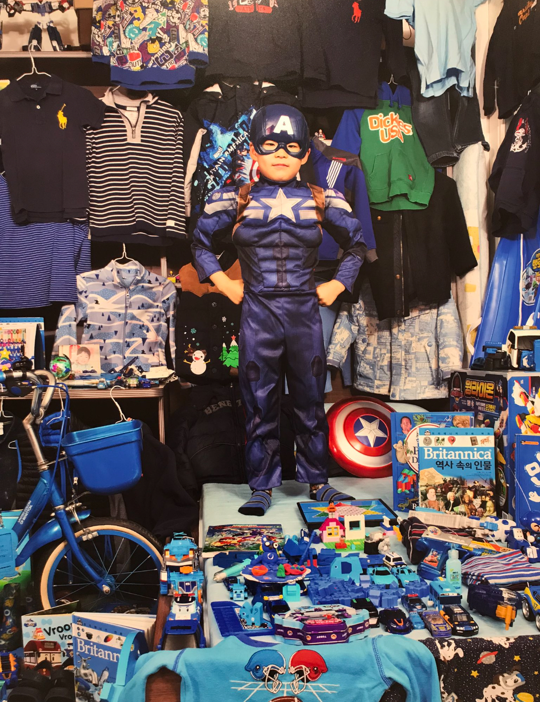
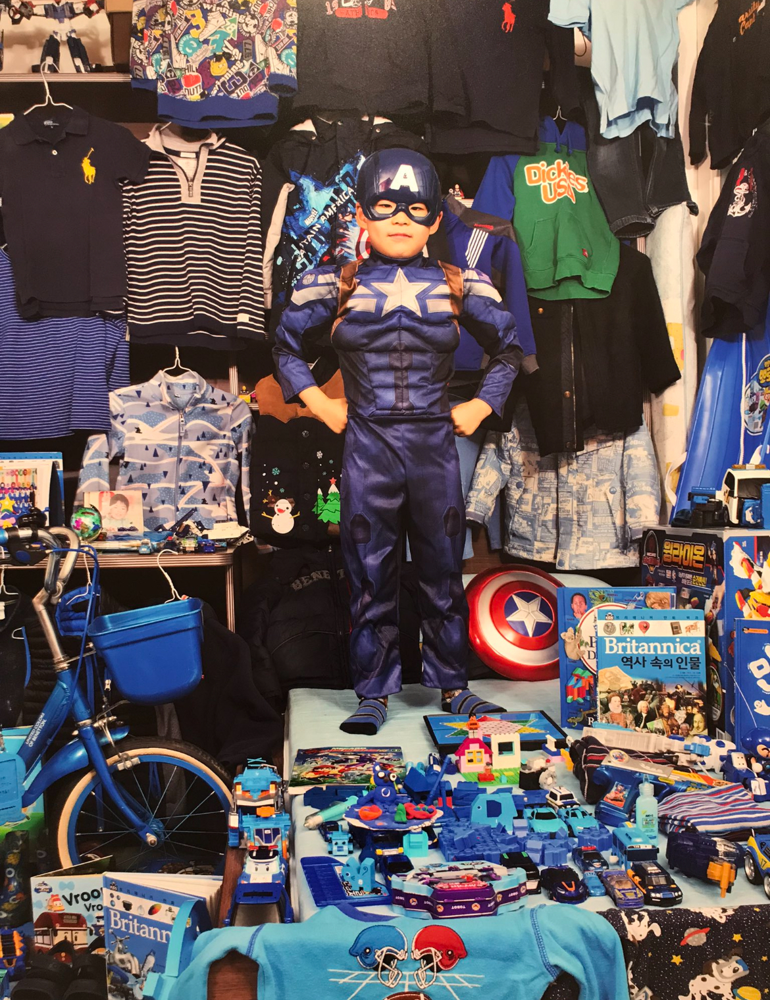

킨더조이라는 어린이들을 대상으로 한 초콜릿 제품이다. 가격표를 확인해보면 킨더초콜릿조이걸과 킨더초콜릿조이보이 두 종류가 있다. 초콜릿의 윗 끝부분의 색이 조이걸은 분홍색, 조이보이는 파란색이다. 성별에 따라 킨더조이를 개봉했을 때 얻을 수 있는 장난감의 종류도 다르다. 여자아이는 보이라고 적힌 초콜릿을 구매하는 것을 멀리할 것이고, 남자아이는 걸이라고 적힌 초콜릿을 구매하는 것을 멀리할 것이다. 성별을 나누지 않고 단순히 킨더초콜릿조이 한 종류로 출시했어도 되지 않았을까? 해당 제품을 구매한 아이들은 어른들에 의도치 않은 성 고정관념이 형성되었다.
해당 노트도 마찬가지이다. 아예 남성과 여성 전용으로 칸을 나누어놓고 남자아이용 노트는 무채색 또는 푸른색 계열의 색과 자동차 그림이 그려져있다. 반면 여자아이용 노트는 분홍색 배경에 예쁜 공주가 그려져있다. 남자아이는 공주가 그려진 노트를 사면 안 되고 여자아이는 자동차가 그려진 노트를 사면 안 되는 것 처럼 구분해놓은 모습이 보기 좋지 않다. 성별에 상관 없이 좋아하는 그림이나 색을 고를 수 있는 권리가 있는데 21줄 무제 남자, 21줄 무제 여자라는 글씨가 아이들에게 어떤 노트를 사야하는지 강요한다.
 

윤정미 사진가의 핑크&블루 프로젝트이다. 사진의 주인공인 여자아이와 남자아이가 소유하고 있는 물건을 하나하나 늘어놓은 사진에서 성 고정관념을 확인할 수 있다. 미국이든 한국이든 여자아이들은 분홍색 옷과 인형을 가지고 있고 연약한 이미지를 연상시키는 공주의 옷을 입고 있다. 반면 남자 아이들은 온통 파란색에 로봇과 조립식 장난감을 가지고 영웅과 강인함을 상징하는 옷을 입고 있다. 여아=핑크, 남아=블루 라는 획일화 된 고정관념을 두 눈으로 확인시켜주는 듯한 해당 사진은 아이들의 취향에 상관 없이 색을 강요하는 현대 사회의 상황을 잘 나타내고 있다.